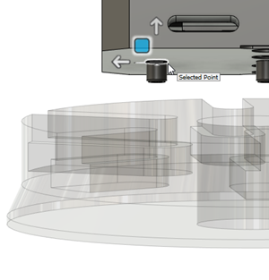

<div id="job_positionReference_origin_point"><p>キャンバスに表示されている形状上の点を選択します。</p>
<p>直線または円形状のエッジを選択して、エッジの中心点を使用することもできます。</p>
<table class="tipTable" cellspacing="10">
<tr>
<td><center></center></td>
</tr><tr>
<td><center></center></td>
</tr></table>
</div>